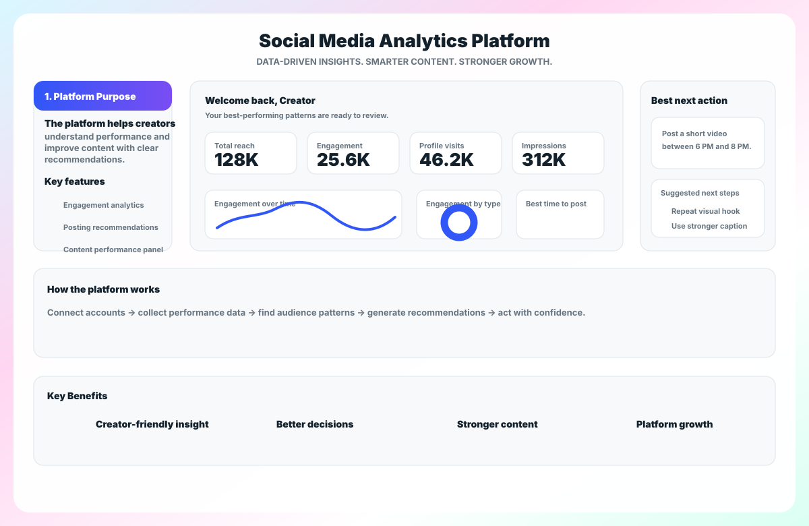

Engagement analytics
Tracks comments, shares, likes, reach, attention, and performance trends. Instead of only displaying numbers, it explains which content produced the strongest response and where engagement changed.
Proposed solution
Social Media Analytics Platform connects to social media accounts, studies post performance over time, recognizes useful patterns, and generates recommendations creators can understand without needing to be data analysts.
Feature overview
The screenshot concept has been rebuilt as a sharp product graphic so the platform dashboard, workflow, and benefits are readable on the website.

How it works
The platform is designed to make analytics feel practical. Users connect accounts, the system studies performance, and recommendations update as audience behavior changes.
Connect social media accounts securely.
Collect post performance data across likes, comments, shares, reach, and audience attention.
Identify patterns in timing, content format, engagement changes, and audience behavior.
Generate personalized recommendations that are easy to understand and immediately usable.
Update insights continuously so creators can adjust strategy as their audience changes.
Key features explained
Each feature is written around a practical user outcome: understand performance, choose better timing, and repeat what works.
Tracks comments, shares, likes, reach, attention, and performance trends. Instead of only displaying numbers, it explains which content produced the strongest response and where engagement changed.
Uses past data and audience activity to suggest optimal posting windows. The goal is to increase visibility by helping creators publish when their audience is most likely to respond.
Highlights top-performing posts and compares content formats. This helps creators stay aware of what is popular with their target audience and plan stronger future content.
Creators gain clearer audience understanding, less uncertainty, and stronger content performance. Social media companies gain healthier engagement, more active creators, and stronger competitive positioning.
See the build plan